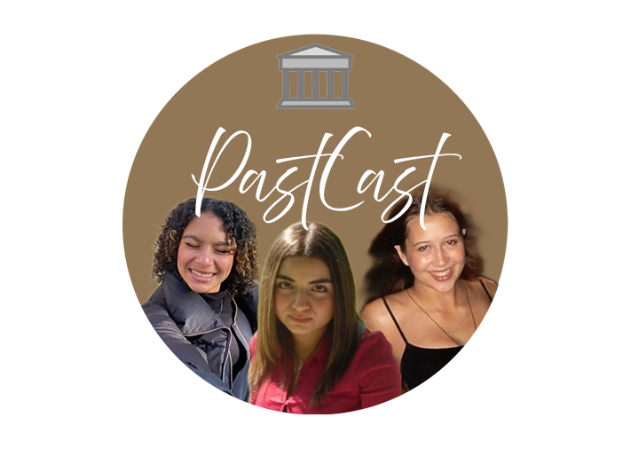

Jihane
Hey guys dit is Jihane, ik ben 20 jaar oud en ik heb super veel
interesse in geschiedenis en mysterieuze verhalen. Ik houd daarnaast
ook enorm van tijd spenderen met mijn vrienden en vind ik het leuk
om mezelf af en toe te filmen en te vloggen
Eysan
Halloo allemaal ik ben Eysan, ik ben 17 jaar oud en ik leef voor
historische verhalen. Ik ben enorm gebonden met het verleden. Ik ben
ook fan van uitgaan en houd ik heel veel van het spelen van de
piano.
Rosa
Mijn naam is Rosa en ik ben deze podcast begonnen omdat ik een
enorme passie heb voor geschiedenis. Ik wil graag de fascinerende
verhalen en gebeurtenissen uit het verleden delen met de wereld,
zodat iedereen kan ontdekken hoe boeiend en belangrijk geschiedenis
kan zijn.
